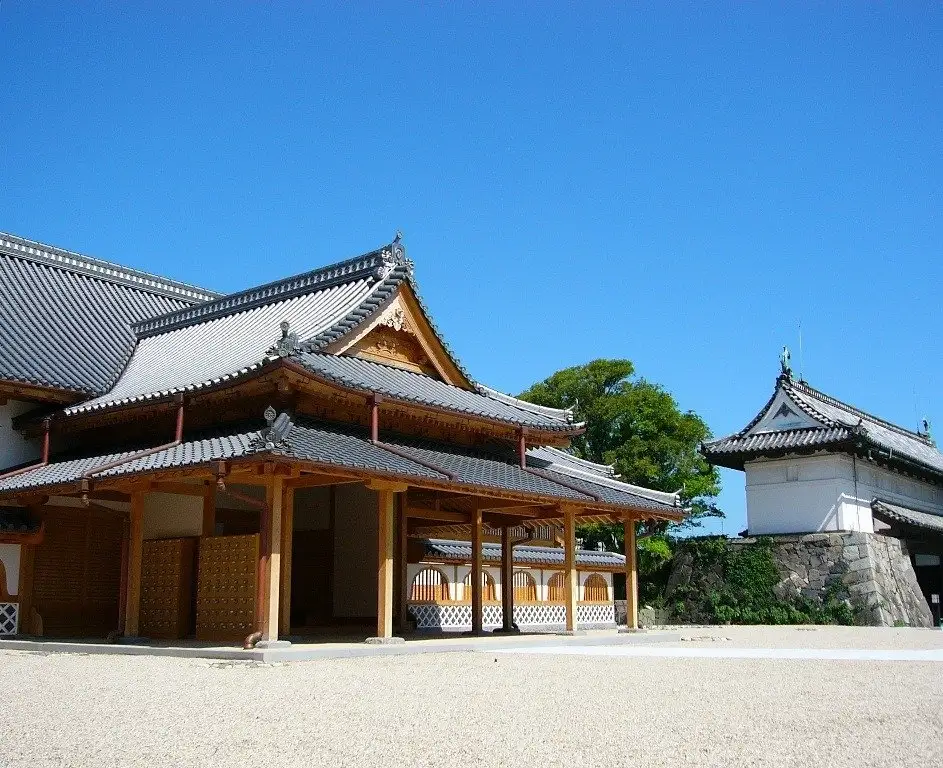
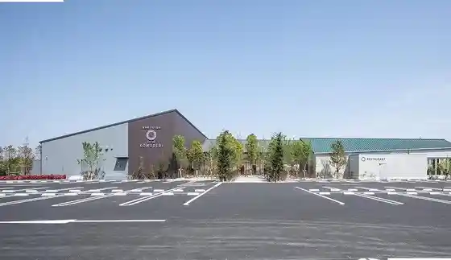
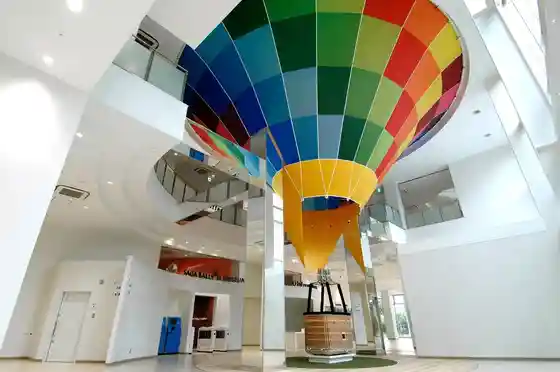
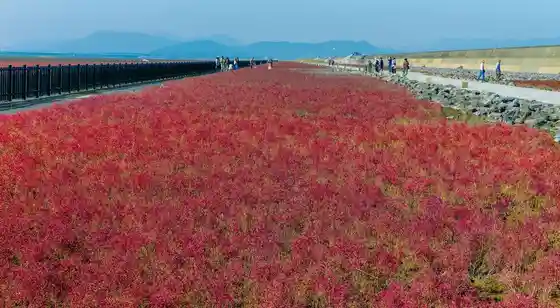

Saga
Saga · Saga
Saga
Highlighted on the Saga map.

Sights
Mitsuse Ruberu Ranch Donguri Village
Saga Baths Tokoro Komorebi

Saga Barun Museum

Shichimenso Gunsei Chi

Koto Kuma no Kawa Onsen
Reikusaido Kitayama
Kanno Koen Kodomo Amusement Park
Roadside Station Yamato (Soyokaze Kan)
Maruyasu Ringo Sono
Mitsuse Onsen Yamabiko Baths
Saga Prefectural Saga Shiromoto Maru Rekishikan
Higata Yoka Park
Chikugo Kawa Noboru Kai Hashi
Saga Kencho Viewpoint Horu
Kyoseki Park
Kitayama Dam
Aji no Moto Kyushu Kojo
Shieasaikuru (Charichari) Saga Poto
Sa Ka Shrine
Marujun Ringo Sono
Kyushu Saga Kokusai Airport
Koto Kashikiri Onsen Yu no Hana
Saga Prefectural Museum Saga Prefectural Art Museum
Yodohime Shrine
Kitayama Campground
Saga Mizu Mo no Gatari Kan
Sano Jomin to Mie Tsu Kaigun Tokoro Ato no Rekishikan
Muonkyanpu
Fuji Town Tourist Information
Saga Airport Park
Yasai Chokubai Tokoro Matsu Chan
Higashi Yoka Higata / Higashi Yoka Higata Bijita Center Higasasu
Mitsuse base camp
Hizen Tori Sen Tei
Eki Machi 1 Chome Saga
Kuma no Kawa Onsen Chidori Baths
SAGAMADO
Zarantan (The Lantown) Mitsuse Highlands
Sagahatsu
SUSIE
Kawakami Kyo
Saga Rekishi Minzoku Kan
Osumi Shigenobu Memorial Museum
Kameya
Choko Kan
(Roadside Station) Yamato Oto Campground
JONAI SQUARE CAFÉ
Muraoka Ya Main Shop
Kinryu Kyoiku Campground
Kaiun Saga Ebisu Suteshon
Osu Fuchi Mesu Fuchi Park
Gyararii Shoppu
Kinryu Yama Ikoi no Plaza
Hashi no Eki Doronpa
Saga Nishiki Kashima Nishiki
sagair
Saikuru Center Shichita (Shichida)
Yoshino Yama Campground
Hizen Biidoro
Taka Den Tera
Kanno Koen Kaku Rintei
Tsuruya Saga Main Shop
Sanchu Campground
Hyotan Shima Park
Mitsuse Rentasaikuru (Mitsuse CUBE Nai)
Kyushu Saga Kokusaikuko Tourist Information
Saga Tourist Information
Saga Kanko Koryu Plaza (Saga Tourism Association)
Kyu Fukuda Ie
Nao Te Suki Washi
Hizen Kokucho Ato Hizen Kokucho Ato Museum
Kyu Koga Ginko
Yamabiko Koryu Kan
Saga Kenko Undo Center
Sa Hoshi Shoyu
Asuka Workshop
Saga Eko Plaza
Saga Daigaku Art Museum
Koto Yama Naka Ajisai no Michi
Gurasukoto Saga Tenisu Club
Kichi Village Ie House
Yamato Chuo Koen Hanashobu Sono
Yamaguchi Ie House